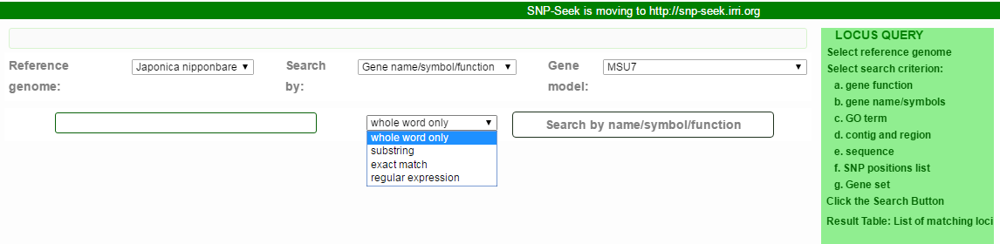
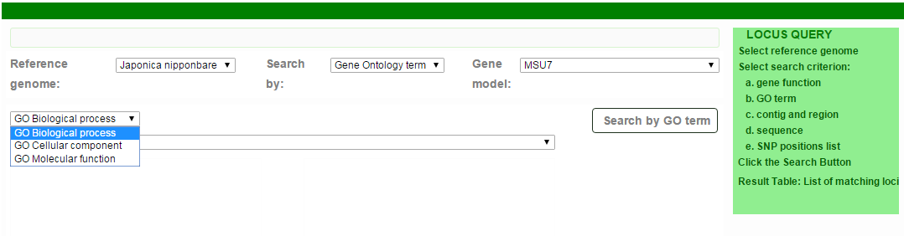
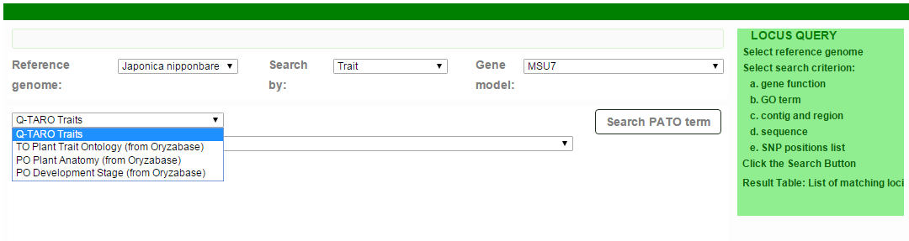
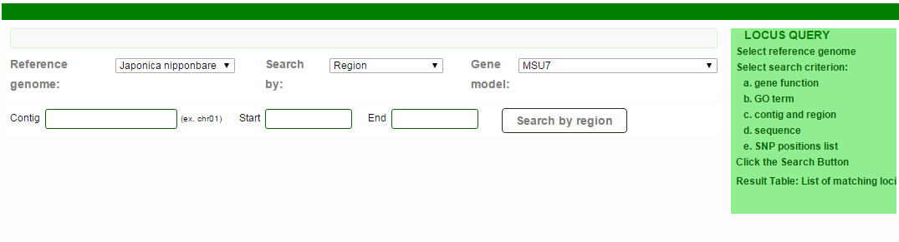
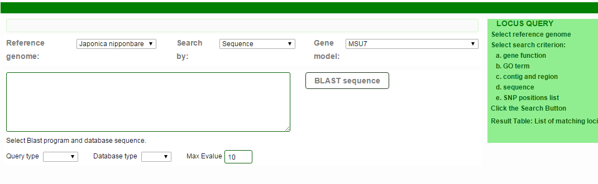
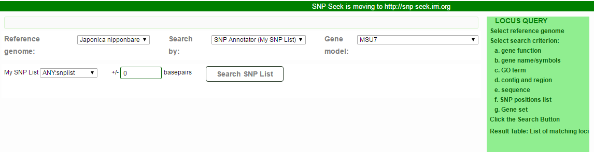
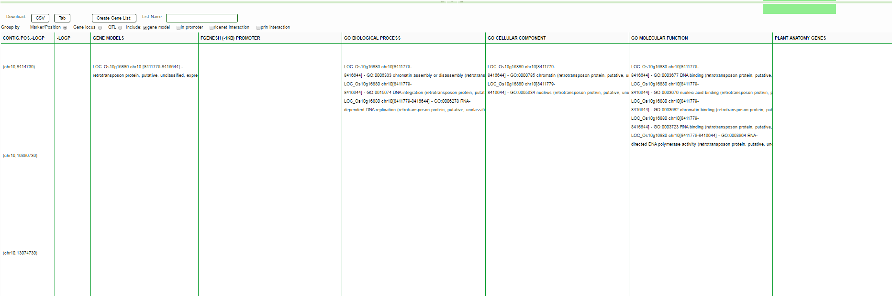
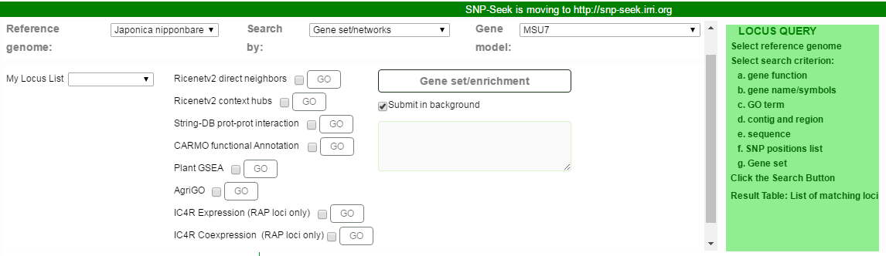

The Locus Query returns the list of loci (genes, QTL) using different search criteria.

The search string may be search as:
Whole word only - string occurs as a whole word (sorrounded by whitespaces or punctuation only and not by alphanumeric on either side)
Substring - occurs as a substring, may be sorrounded by any characters
Exact match - the string occurs exactly (no prefix, no suffix)
Regular expression - search as a (POSIX) regular expression





The result is a table of markers with annotations. The table rows can be Grouped by Marker, Gene model or QTL. A Gene Locus list can be created from the annotations based on the selection of Gene Models, Gene of promoters, Gene with interaction from RiceNetv2 or PRIN.

The annotations and their sources are listed in this table:
Table S3. SNP annotations and sources (from NAR 2016)
Annotation |
Description |
URL |
Publication |
GENE MODELS |
Rice gene models |
||
LOC_* MSU gene models |
http://rice.plantbiology.msu.edu/ |
(16) |
|
Os0* Os1* RAP gene models |
http://rapdb.dna.affrc.go.jp/ |
(17) |
|
OsNippo* Merged MSU, RAP and FGenesh++ gene models |
http://snp-seek.irri.org/_jbrowse.zul?tracks=DNA,fgeneshv1gff |
||
FGENESH (-1KB) PROMOTER |
SNP in promoter region (-1kb) of FGenesh gene model described above |
(18) |
|
GO BIOLOGICAL PROCESS, GO CELLULAR COMPONENT, GO MOLECULAR FUNCTION |
Gene Ontology terms assigned to LOC_* gene models by MSU |
http://rice.plantbiology.msu.edu/annotation_pseudo_goslim.shtml |
(16) |
PLANT ANATOMY GENES,PLANT DEVELOPMENT GENES |
PO (Plant Ontology) Terms assigned to gene models by Oryzabase |
(20) |
|
TRAIT ONTOLOGY GENES |
TO (Plant Trait Ontology) Terms assigned to gene models by Oryzabase |
(20) |
|
PLANTPROMDB PRED (-200) PROMOTER |
Predicted Rice promoter region aligned with IRGSPv1 genome |
http://linux1.softberry.com/data/plantprom/Links/PLPR_predicted_OS.seq |
(25) |
QTARO QTL |
SNP in QTL region from QTARO |
(26) |
|
QTARO TRAIT GENES |
SNP in gene model from QTARO-OGRO |
(21) |
|
RICENETV1 INTERACTIONS, RICENETV2 INTERACTIONS |
Interacting genes, genes in direct neighborhood with 'GENE MODELS' using interactions from RiceNet database |
(27) |
|
PRIN EXPERIMENTAL, PRIN PREDICTED |
Interacting proteins, genes coding proteins that interact with proteins coded by 'GENE MODELS', from PRIN database |
(28) |
|
SNPEFF |
SNP effects detected on MSU gene models, using SNPEff program |
http://snpeff.sourceforge.net/ , http://www.ncbi.nlm.nih.gov/pmc/articles/PMC3679285/ |
(25) |

Created with the Personal Edition of HelpNDoc: Full-featured Kindle eBooks generator